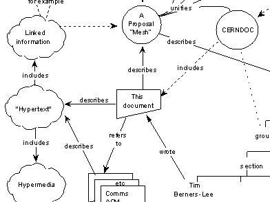
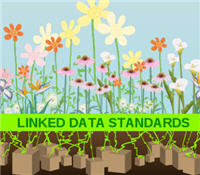
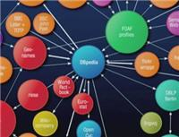

El futuro de la Web (I): Tim Berners-Lee en TED 2009

En marzo de 1989, Tim Berners-Lee escribió un memo planteando una Propuesta para la Administración de Información; un documento histórico que comienza explicando la imperiosa necesidad de que la masiva cantidad de datos de los experimentos y de los aceleradores del CERN no se pierdan, sino que se coloquen en un sistema de hipertexto, en un sistema de «información enlazada», que sea flexible y en donde se puedan hacer búsquedas.
Es curioso leer en las primeras líneas de ese documento la mención al Gran Colisionador de Hadrones (LHC), la máquina gigantesca que (20 años más tarde) se pondrá en marcha muy probablemente en los últimos meses de este 2009. (Ya hemos visto en Anamnesis el propósito del LHC, así como los detalles del accidente que retrasó su puesta en operación.)
Podría decirse que la WWW comenzó el 17 de mayo de 1990, día en que estuvo disponible por primera vez en las computadoras centrales del CERN. Y bueno, ha sido un viaje tremendo durante los 19 años transcurridos hasta ahora.
Pero esto no ha hecho más que empezar.
El 4 de febrero pasado, durante TED 2009, Tim Berners-Lee le propuso al mundo su siguiente idea para revolucionar al mundo de la información:
Datos vinculados
Los datos vinculados (en inglés Linked Data) es una nueva formulación del manejo de datos en la red.
Para decirlo de manera llana, esta tecnología te permite descubrir, describir, reutilizar y conectarte a todo tipo de datos.
Los principios básicos delineados en el documento inicial «Linked Data», escrito por Tim Berners-Lee en julio de 2007 son (traducción Wikipedia):
- Utilizar URIs para identificar los recursos publicados en la Web
- Aprovechar el HTTP de la URI para que la gente pueda localizar y consultar (es decir, desreferenciar) estos recursos. (En la charla verán a esta acción subtitulada como «visitar», sintetizando en una palabra a la localización y consulta).
- Proporcionar información útil acerca del recurso cuando la URI haya sido desreferenciada.
- Incluir enlaces a otras URI relacionadas con los datos contenidos en el recurso, de forma que se potencie el descubrimiento de información en la Web.
¿Cuál es su importancia? ¿Dónde está lo revolucionario?
Los datos organizados de esa manera pueden ser explorados y procesados directamente por computadoras, al ya no estar «atrapados» en documentos en donde su significado, utilización, formato, relaciones, etcétera, no son visibles para motores de búsqueda o aplicaciones de computadora. En otras palabras, la inmensa mayoría de la información actual esta en «humano», en documentos cuya información y propósito son entendidos por los seres humanos, pero que no son extraíbles por medios automáticos.
Estirando la imaginación con un ejemplo aproximado:
Si la Web fuera tu PC, y los documentos de hipertexto fueran tu contabilidad, este sistema representa el momento en que dejarías de guardar tus gastos e ingresos en documentos de texto (en los que tú mismo haces las sumas y operaciones) y empezarias a ponerlos en una hoja de cálculo. Los números son los mismos, y se ve todo muy parecido, pero con una simple acción obtienes promedios, sumas, porcentajes, etcétera; además de que con un poco de esfuerzo adicional, puedes construir un sistema básico para calcular automáticamente tu declaración de impuestos.
(Este símil es muy pobre, porque en datos enlazados tienes también relaciones, así que es posible, teóricamente, construir y descubrir autómaticamente el significado de los datos, creando posibilidades inimaginables, ya que al momento no existe nada parecido.)
Este sistema propuesto por Tim Berners-Lee abre las puertas de la Web a los sistemas computacionales, para que accedan y procesen directamente a los datos alojados en ella.
¿Cómo se consigue?
Creando «data sets» (conjuntos de datos), que pueden entenderse como bases de datos accesibles vía Web (usando las URIs mencionadas). Estos data sets agrupan muchos tripletes, los cuales son un formato de datos RDF que tienen la forma: sujeto-predicado-objeto. No profundizaré más en lo técnico.
En este momento, el esfuerzo más importante está organizado bajo el proyecto «Linking Open Data» (LOD) del W3C. Este proyecto agrupa a decenas de data sets de todo el mundo, y colectivamente, en mayo de 2009, tiene alrededor de 4.7 mil millones de tripletes, interconectados por aproximadamente 142 millones de enlaces RDF.
Lo importante es poner los datos en la red y relacionarlos, lo que se podrá hacer después con ellos es algo que ahora no podemos ni imaginarnos, pero seguramente será por lo menos tan increíble como lo que ha ocurrido en los últimos 20 años.
El ponente
 Sir Timothy John Berners-Lee, conocido como el padre de la Web, es un informático teórico inglés graduado de la Universidad de Oxford. Es director del World Wide Web Consortium (W3C), un organismo encargado de fijar los estándares internacionales para el desarrollo de la Web; también es el fundador de la World Wide Web Foundation, organización dedicada a la mejora y a aumentar la disponibilidad de la Web.
Sir Timothy John Berners-Lee, conocido como el padre de la Web, es un informático teórico inglés graduado de la Universidad de Oxford. Es director del World Wide Web Consortium (W3C), un organismo encargado de fijar los estándares internacionales para el desarrollo de la Web; también es el fundador de la World Wide Web Foundation, organización dedicada a la mejora y a aumentar la disponibilidad de la Web.
En la siguiente conferencia, Tim Berners-Lee utiliza como ejemplo a la presentación de Hans Rosling en TED 2007, no sólo para destacar la importancia de los datos accesibles y libres, sino también para hacer evidente el poder que resulta al interrelacionarlos.
Conferencia: Datos vinculados
Compartir, conectar, crear.
[Charla completa en YouTube por cortesía de Keny.]
Descarga* este video en HQ (850×480): Parte 1.rar Parte 2.rar (Video 142 MB)
-Reunir las 2 partes en la carpeta deseada y extraer con WinRAR.
Video: mp4, audio: AAC
Traducción y subtitulado: Ajmme Kajros
* En TED: Tim Berners-Lee on the next Web.
*Video subtitulado y distribuido bajo los términos de uso de TED Conferences LLC.
Metadatos y acciones
 Temas: historia, internet, tecnología, tedtalk, video ⋅
Para guardar: Enlace permanente a esta anotación.
Temas: historia, internet, tecnología, tedtalk, video ⋅
Para guardar: Enlace permanente a esta anotación.
 Print This Post
Print This Post
Comentarios
Los comentarios están cerrados.
Categorías
Últimas 4 anotaciones
Últimas anotaciones en cada categoría

Divulgación
El dinero no fomenta la creatividad: Daniel Pink en TEDGlobal 2009

Inspiración
Los 30 no son los nuevos 20

Noticias
Ver tu mente en tiempo real: Christopher deCharms en TED 2008
![Música en la era digital [Animación]](../../../wp-content/themes/tma/images/featured/animation_04_2009_featured.jpg)
Ocio
Música en la era digital [Animación]
mayo 31, 2009, 8:46 pm
Información Bitacoras.com…
Valora en Bitacoras.com: En marzo de 1989, Tim Berners-Lee escribió un memo planteando una Propuesta para la Administración de Información; un documento histórico que comienza explicando la imperiosa necesidad de que la masiva cantidad de datos de …
junio 1, 2009, 9:38 am
[...] El futuro de la Web: Tim Berners-Lee en TED 2009ajmmekajros.com/anamnesis/2009/05/el-futuro-de-la-web-i-tim-… por Cs4r hace pocos segundos [...]
junio 1, 2009, 9:44 am
[...] El futuro de la Web (I): Tim Berners-Lee en TED 2009 alojada en ajmmekajros.com/anamnesis/2009/05/el-futuro-de-la-web-i-tim-… joneada por me_joneo_pensando_en_ti hace pocos segundos [...]
junio 16, 2009, 5:40 pm
[...] El futuro de la web, Tim Berners-Lee en TED 2009: Datos vinculados [...]
agosto 3, 2010, 12:31 pm
[...] Más detalles y descarga del video en formato mp4 en: http://ajmmekajros.com/anamnesis/2009/05/el-futuro-de-la-web-i-tim-berners-lee-en-ted-2009/ [...]
diciembre 10, 2010, 12:10 am
[...] Anamnesis Did you like this? Share [...]